الديناميكا الكهربائية المنتهية من ازدواجية T
Patricio Gaetea** * البريد الإلكتروني: patricio.gaete@usm.cl , و Piero Nicolinib,c,d†† † البريد الإلكتروني: nicolini@fias.uni-frankfurt.de
aDepartamento de Física and
Centro Científico-Tecnológico de Valparaíso-CCTVal,
Universidad Técnica Federico Santa María, Valparaíso, Chile
bCenter for Astro, Particle and Planetary Physics,
New York University Abu Dhabi, Abu Dhabi, UAE
cFrankfurt Institute for Advanced Studies (FIAS),
Frankfurt am Main, Germany
dInstitut für Theoretische Physik,
Goethe-Universität, Frankfurt am Main, Germany
الملخص
نقدم في هذه الورقة تبعات مؤثر بادمانابان في الديناميكا الكهربائية. ويتوافق ذلك مع إدخال آثار ازدواجية T في نظرية مقياس U(1). ومن خلال صياغة فعل غير محلي منسجم مع الفرضية المذكورة أعلاه، نستنتج هيئة الجهود الساكنة بين الشحنات الكهربائية باستعمال مقاربة تكامل المسار. ومن اللافت أن جهد كولوم ينتظم بفعل مقياس طول يتناسب مع المعلمة . وبناء على ذلك، تنعدم الحقول عند المبدأ. ونناقش أيضا مجموعة من منصات الاختبار التجريبية القادرة على كشف النتائج السابقة. ومن المثير للاهتمام ملاحظة أن ازدواجية T تولد أثرا لتكسير الأبعاد يشبه ظواهر مماثلة في الكهرومغناطيسية الكسرية. وأخيرا، استنتجنا نتائجنا أيضا بطريقة ثابتة المقياس، بوصف ذلك فحصا لازما للاتساق في أي نظرية غير ماكسويلية.
1 مقدمة
تمثل صياغة وصف موحد للتآثرات الأساسية التي تحكم الكون، من المقاييس المجهرية إلى المقاييس العيانية، مسارا محفوفا بكثير من الصعوبات. فعلى سبيل المثال، إن الجمع بين الجاذبية والميكانيكا الكمومية صعب تقنيا ومفاهيميا، كما أن أصل القطاعات المظلمة، وبوجه أعم الفينومينولوجيا الواقعة وراء النموذج المعياري وجاذبية آينشتاين، لا يزال غير واضح. والأشد إشكالا هو إدراج مثل هذه الفينومينولوجيا ضمن صياغة وحيدة تعمل من مقياس بلانك، GeV، نزولا إلى مقياس التيرا.
ربما تكون نظرية الأوتار الفائقة أبرز منافس لتقديم وصف متسق ذاتيا لجميع التآثرات على المستوى الكمومي [1]. فهي تتمتع بالانتهائية فوق البنفسجية [2, 3] وبغياب الشذوذات [4]. غير أنها ليست خالية من القيود. فعلى سبيل المثال، من الصعب تحديد منظر الأوتار، أي نظريات الحقل الفعالة المزودة بآثار وترية أصيلة [5]. إضافة إلى ذلك، تقع نظرية الأوتار الفائقة حاليا في تعارض مع الأدلة التجريبية بسبب عدم رصد إشارات للتناظر الفائق11 1 للحصول على تقرير متوازن عن الوضع الراهن لمقترحات الجاذبية الكمومية، بما في ذلك نظرية الأوتار، نوصي بالقسم 7 من ورقة Nicolai [1].. ولعله من الأجدر إرجاء تحليل هذه المشكلات كلها ومحاولة فهم تبعات بعض السمات المستقلة عن النموذج على نحو أفضل، أي الخصائص الكونية المشتركة بين أي صياغة للجاذبية الكمومية. فعلى سبيل المثال، يتوقع من الزمكان الكمومي أن يظهر طابعا غير محلي أصيلا وأن يكون خاليا من التفردات. ونتيجة لذلك، كرس كثير من الجهود لتحسين هندسات الزمكان الكلاسيكية باتباع طائفة من نماذج الجاذبية الكمومية، مثل الهندسة اللاتبادلية [6, 7]، ومبدأ الارتياب المعمم [8, 9, 10, 11]، والجاذبية الآمنة تقاربيا [12]، والجاذبية الكمومية الحلقية [13]، واكتمال الجاذبية الذاتي [14, 15, 16] والجاذبية غير المحلية [17, 18].
استنتج حديثا حل لثقب أسود منتظم بإدخال آثار ازدواجية T [19]. تكمن ماهية ازدواجية T في ثبات نظرية الأوتار تحت قلب نصف قطر التصغير [20]. ويستلزم هذا بالضرورة وجود نصف قطر تصغير أصغري
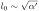
، أي مقياس تتوقف عنده الفكرة الكلاسيكية للزمكان عن الوجود. وتنعكس سمة الزمكان هذه أيضا في نتيجة جانبية أخرى لنظرية الأوتار، وهي تعديل علاقات الارتياب| (1) |
المعروفة باسم مبدأ الارتياب المعمم [21, 22, 23]. تحتوي المعادلة (1) على حد إضافي يمنع أطوال كومبتون الموجية من أن تكون أصغر من
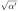
. وتنحدر النتيجة نفسها من الهندسة اللاتبادلية، وهي سمة من سمات الزمكان الكمومي ترتبط بها ازدواجية T في حالتي الأوتار المفتوحة والمغلقة معا [24, 25].وبالمثل، تقوم صياغة Padmanabhan لازدواجية T على تعديل تمثيل تكامل المسار لمؤثر حقل [26]. ولاستيعاب «طول نقطة صفرية» للزمكان، ينبغي أن تسهم المسارات الأصغر أو الأكبر من هذا الطول بالطريقة نفسها في تكامل المسار. ونتيجة لذلك، يجب أن يكون هذا الأخير ثابتا بالنسبة إلى تحويل الازدواجية
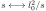
، حيث إن هو الزمن الخاص للمسار22
2
ندمج عوامل «طول النقطة الصفرية»
بإعادة تعريف مناسبة لـ
هو الزمن الخاص للمسار22
2
ندمج عوامل «طول النقطة الصفرية»
بإعادة تعريف مناسبة لـ  . لمزيد من التفاصيل انظر [27].. ويأخذ مؤثر من هذا النوع فعليا الشكل [26]
. لمزيد من التفاصيل انظر [27].. ويأخذ مؤثر من هذا النوع فعليا الشكل [26]
| (2) |
حيث إن  دالة بسل المعدلة من النوع الثاني.
وتدخل مثل هذه الدالة حدا متناقصا أسيا للحجج الكبيرة، مما يضمن الانتهائية فوق البنفسجية.
ومن اللافت أن الصيغة الدقيقة لمؤثر Padmanabhan (2) يمكن اشتقاقها تحليليا من نظرية الأوتار، كما تبين في سلسلة من الأوراق [28, 29, 30].
دالة بسل المعدلة من النوع الثاني.
وتدخل مثل هذه الدالة حدا متناقصا أسيا للحجج الكبيرة، مما يضمن الانتهائية فوق البنفسجية.
ومن اللافت أن الصيغة الدقيقة لمؤثر Padmanabhan (2) يمكن اشتقاقها تحليليا من نظرية الأوتار، كما تبين في سلسلة من الأوراق [28, 29, 30].
من المهم التأكيد أن انتظام حل الثقب الأسود [19] يكشف معنى فيزيائيا آخر لـ
 . فمن معامل المترية
. فمن معامل المترية
| (3) |
يدرك المرء أن الزمكان يطابق ثقب Bardeen الأسود المنتظم، بعد استبدال الشحنة المغناطيسية بطول النقطة الصفرية،
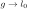
. وهذا يعني أن المنظم فوق البنفسجي يمكن أن ينظر إليه كنقطة محورية لازدواجية أخرى، هي الازدواجية بين الجاذبية ونظريات المقياس33 3 لتفسير موسع للازدواجيات الناشئة من المترية (3)، انظر التحليل في [31] القائم على آلية النسخة المزدوجة..انطلاقا من هذه المقدمات، يصبح من الضروري الآن استكشاف دور المؤثر (2) في فيزياء التآثرات الأخرى. ومن دوافع هذا البحث أن نظريات الحقل المعتادة، عموما، لا الجاذبية وحدها، تخضع أيضا لتصحيحات غير محلية عند مقياس معين تصبح عنده الأجسام النقطية غير معرفة تعريفا حسنا. وضمن هذا النموذج، نبدأ في هذه الورقة من أبسط حالة لنظرية U(1)، أي الديناميكا الكهربائية. ولهذا الغرض، من المهم توضيح النظام الذي نهدف إلى استكشافه. فمن المتوقع أن تنحرف الديناميكا الكهربائية عند الطاقات العالية عن صياغة Maxwell. وتظهر الحقول القوية لاخطية، وهي سمة تتيح فينومينولوجيا غنية، مثل آثار الانكسار المزدوج وتشتت فوتون-فوتون [32]، وهي حاليا قيد الفحص التجريبي [33, 34]. ومن ناحية أخرى، لن ننظر في هذه الآثار اللاخطية، بل سنبقى دون ما يسمى حد Schwinger، أي
| (4) | |||||
| (5) |
تهدف مقاربتنا إلى تحليل السلوك قصير المدى للحقول منخفضة الشدة. والأهم من ذلك أنها تتيح ميزة فهم الأثر الصافي لازدواجية T من دون تداخل من ظواهر أخرى تخص نظام الحقول القوية. وأخيرا، سننظر في الشروط الساكنة فقط في كامل الورقة. وكما سيتضح، ستكون هذه الفرضية كافية لالتقاط السمات الأساسية للديناميكا الكهربائية المعدلة.
تنظم الورقة على النحو الآتي: في القسم 2 نقدم اشتقاق القوى الساكنة بين مصدرين باستعمال مقاربة تكامل المسار؛ وفي القسم 3 نناقش دلالة نتائجنا وتبعاتها الفينومينولوجية؛ وفي القسم 4 نقترح اشتقاقا بديلا للقوى الساكنة قائما على صياغة ثابتة المقياس ومعتمدة على المسار؛ وأخيرا، في القسم 5، نلخص نتائجنا ونستخلص الخلاصات.
2 ديناميكا كهربائية منتهية شبيهة بماكسويل
نهدف في هذا القسم إلى اشتقاق طاقة التآثر بين مصادر ساكنة نقطية، بافتراض أن تبادل الفوتونات تحكمه مؤثر ازدواجية T (2). وسيتبين أن النتيجة مكافئة لنتيجة الديناميكا الكهربائية القياسية (المحلية) بين مصادر ساكنة معدلة بازدواجية T، أي غير محلية.
تتمثل نقطة انطلاق مناقشتنا في كثافة لاغرانجية الزمكان رباعية الأبعاد الآتية44
4
نعتمد الوحدات الطبيعية من هذه النقطة فصاعدا، أي 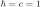
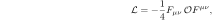 |
(6) |
حيث إن
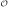
هو المؤثر غير المحلي| (7) |
مع
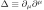
. وهنا تمثل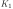
دالة بسل المعدلة من النوع الثاني، ويمثل طولا أصغريا، أو طول النقطة الصفرية للزمكان. ونؤكد أن اللاغرانجية
(6) ثابتة المقياس بصورة ظاهرة، على الرغم من وجود حد كتلة
طولا أصغريا، أو طول النقطة الصفرية للزمكان. ونؤكد أن اللاغرانجية
(6) ثابتة المقياس بصورة ظاهرة، على الرغم من وجود حد كتلة 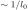
. لمزيد من التوضيحات حول هذه النقطة، انظر القسم 4.ترتبط جدة (6) بخصائص المؤثر غير المحلي  . فعند العزوم الصغيرة يصبح الفعل أعلاه فعل Maxwell المعتاد، أي
. فعند العزوم الصغيرة يصبح الفعل أعلاه فعل Maxwell المعتاد، أي
| (8) |
أما عند العزوم الكبيرة فيقرأ المؤثر:
| (9) |
وتمثل العلاقة أعلاه العنصر الأساسي لتحسين سلوك شدة الحقل  عند المسافات القصيرة.
عند المسافات القصيرة.
وفقا لصياغة تكامل المسار المعتادة، يمكن كتابة المولد الدالي لدوال Green على النحو
![\begin{equation}
Z\left[ J \right] = \exp \left( { - \frac{i}{2}\int {d^4 xd^4 y}
J^\mu \left( x \right)D_{\mu \nu } \left( {x,y} \right)J^\nu \left(
y \right)} \right), \label{NLMaxwell15}
\end{equation}](equations/eq_0036.svg) |
(10) |
حيث إن
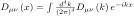
هو المؤثر في مقياس Feynman، ويقرأ |
(11) |
وبمعونة العبارة
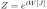
، و(10)، تصبح| (12) |
والآن، مع أخذ أن التيار الخارجي
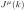
محفوظ في الحسبان، نحصل مباشرة على| (13) |
من أجل ![$J_\mu \left( x \right) \!= \!\!\left[ {Q\delta ^{\left( 3
\right)} \left( {{\bf x} - {\bf x}^{\left( 1 \right)} } \right) + Q^
\prime \delta ^{\left( 3 \right)} \left( {{\bf x} - {\bf x}^{\left(
2 \right)} } \right)} \right] \! \delta _\mu ^0$](equations/eq_0044.svg) ، نجد أن طاقة التآثر
يمكن وضعها في الصيغة
، نجد أن طاقة التآثر
يمكن وضعها في الصيغة
 |
(14) |
حيث
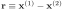
. وباستخدام التمثيل التكاملي لدالة بسل (انظر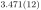
من [35]) |
(15) |
نعبر عن التكامل على
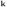
في الصيغة| (16) |
مع
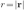
،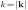
. وهنا هي دالة غاما الناقصة السفلى المعرفة بالتمثيل التكاملي الآتي| (17) |
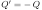
، تقرأ طاقة التآثر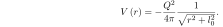 |
(18) |
وخلافا لنظرية Maxwell المعتادة، تكون الطاقة أعلاه منتظمة عند المبدأ. وهذا نتيجة مباشرة لازدواجية T الوترية المشفرة في المؤثر (13)، على غرار ما وجد لجهد Newton في [19].
يمكن للمرء أن يلاحظ كذلك أن (16) ليست سوى دالة Green المألوفة، ، للديناميكا الكهربائية المعدلة بازدواجية T، أي
| (19) |
حيث تقرأ دالة Green القياسية، أي دالة نظرية Maxwell،
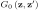
، كما يلي| (20) |
وفي الواقع، بتحويل إلى فضاء Fourier، نحصل على (16). وتعرض معادلة دالة Green في (19) تلطيخا غير محلي للمصدر، يشبه ما وجد في سياق الهندسة اللاتبادلية [36, 37].
3 المناقشة والدلالة
نقدم في هذا القسم بعض التعليقات حول تفسير نتائجنا وتبعاتها الفينومينولوجية.
إن أبسط نظام كولومي هو ذرة الهيدروجين، التي اقترحت حديثا منصة اختبار لآثار نظرية الحقل الكمومي الغريبة [38]. وفي حالة اللّاجسيمات، توفر دقة قياسات مستويات طاقة الهيدروجين حدودا لمقياس اللّاجسيمات يمكن أن تنافس تلك المستمدة من شذوذ الميون
[39] ومن تجارب أخرى في LHC [40]. وينطبق ذلك بوجه خاص على بعد التحجيم الصغير ، أي في حد Maxwell، لأن الديناميكا الكهربائية المتوسطة باللّاجسيمات ليست تحليلية في هذا الحد،
وتزداد التصحيحات كبرا. أما بالنسبة إلى الجهد (18)، فقد دُرست الآثار في ذرة الهيدروجين
في [41]. غير أن القيود في هذه الحالة أقل فعالية، لأن النظرية تعتمد على
معلمة واحدة فقط،  ، وهي تحليلية عند
، وهي تحليلية عند  . ويمكن تقدير ذلك أيضا باعتبار
. ويمكن تقدير ذلك أيضا باعتبار
| (23) |
حيث إن
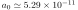
m هو نصف قطر Bohr، و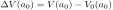
، مع كون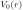
طاقة جهد Coulomb. وهنا تمثل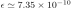
الخطأ النسبي للديناميكا الكهربائية القياسية في طاقة الحالة الأرضية، أي الارتياب في ثابت Rydberg [42, 43]. وبناء على ذلك، يجد المرء أن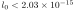
m، بما يتفق مع التحليل الكامل في [41].وتوفر ظاهرة Casimir منصة اختبار ممكنة أخرى للديناميكا الكهربائية. ففي حالة تعديلات اللّاجسيمات، يمكن للمرء
أن يجد حدودا قوية على المعلمات الحاكمة للنظرية، بسبب تفرد حد Maxwell المذكور آنفا
[44].
ومرة أخرى، لا يتوقع أن تكون الديناميكا الكهربائية لازدواجية T مقيدة بقوة في أنظمة Casimir. والاحتمال الوحيد هو
افتراض أن الفعل (6)، بدلا من أن يكون امتدادا للديناميكا الكهربائية القياسية، يصف
قطاعا آخر وراء النموذج المعياري، مثل القطب
المغناطيسي المنفرد، كما يوحي به دور  في المترية (3).
وبناء على ذلك، يصبح حد Maxwell تفرديا قياسا بحالة اللّاجسيمات.
في المترية (3).
وبناء على ذلك، يصبح حد Maxwell تفرديا قياسا بحالة اللّاجسيمات.
ومن اللافت أنه في وجود اللّاجسيمات، يتوقع المرء تكسيرا كاملا لألواح Casimir. وبعبارة أخرى، فإن حقلا لافوتونيا
بين لوحي المكثف «يرى» بعديهما عددا مستمرا، لا بعدين فحسب
لمستوى.
وتحدث الظاهرة نفسها في حالة أفق الحدث لثقب أسود في جاذبية متوسطة باللّاجسيمات [45].
ويمكن تفسير ذلك بالتسطح المطابق للزمكانات ثنائية الأبعاد وبحقيقة أن اللّاجسيمات تتمتع بثبات المقياس [46]. وحتى إن لم يكن هذا هو الحال في
الديناميكا الكهربائية ذات ازدواجية T، فإن التكسير يظهر أيضا في (18)، لأن بعد الزمكان يصبح عددا
مستمرا يعتمد على  . وبالفعل يمكن تعريف البعد الكسري الآتي
. وبالفعل يمكن تعريف البعد الكسري الآتي
| (24) |
الموافق لقانون القوة لجهد ساكن عام  . وفي حالة Coulomb، تعطي المعادلة أعلاه
. وفي حالة Coulomb، تعطي المعادلة أعلاه
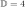
، مشيرة إلى غياب التكسير وغياب الآثار غير المحلية، كما هو متوقع. وعلى العكس، في حالة ازدواجية T يجد المرء البعد الآتي المعتمد على المقياس:| (25) |
تكشف المعادلة أعلاه نظامين: نظام Coulomb يوافق البعد القياسي تحت الأحمر  عند
عند  ، ونظاما فوق بنفسجي مختزلا بعديا،
، ونظاما فوق بنفسجي مختزلا بعديا،
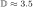
من أجل . ومجال البعد أعلاه هو في الواقع
. ومجال البعد أعلاه هو في الواقع 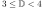
. لاحظ أن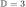
يعني أن الجهد ثابت عند المبدأ،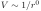
، أي بصمة ديناميكا كهربائية منتهية.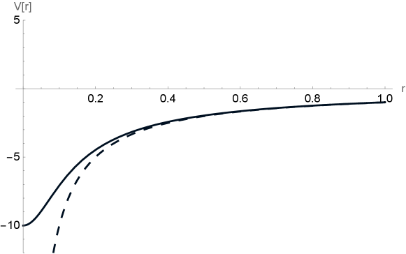
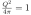
و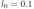
. يمثل الخط المتقطع جهد Coulomb.عند هذه النقطة، تصبح الملاحظة حول حدود المسافات القصيرة،
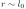
و ، إلزامية. للوهلة الأولى، قد يبدو مناقضا للحدس أن ينظر المرء في مقاييس طول دون الطول الأصغري
، إلزامية. للوهلة الأولى، قد يبدو مناقضا للحدس أن ينظر المرء في مقاييس طول دون الطول الأصغري  . ومن الناحية المثالية، يود المرء إجراء حد فيزيائي،
. ومن الناحية المثالية، يود المرء إجراء حد فيزيائي، 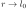
، للحصول على جهد منته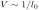
. ويتطلب مثل هذا الحد الفيزيائي بنية زمكانية على نمط «الجبن السويسري». وعمليا، فإن اقتطاع «كرة» متمركزة حول الشحنة من المتشعب أمر صعب رياضيا أو مستحيل. ولتجاوز هذه الصعوبة، استبدلنا في صياغتنا قطع كرة المتشعب بدالة مكامل في (16) تقدم إسهامات مهملة في الجهد الكهروستاتيكي من أجل (انظر الشكل 1). ونتيجة لذلك، يظل من الممكن صوريا النظر في حدود البعد الكسري من أجل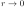
. ويخبرنا هذا الحد أن النظرية منتهية. أما الحالة الأخرى، أي ، فتخبرنا أن المتشعب في ذلك النظام يكون قد خضع بالفعل لتقلبات ميكانيكية كمومية عنيفة. فالزمكان في الواقع بنية كسرية ذات بعد غير صحيح.
، فتخبرنا أن المتشعب في ذلك النظام يكون قد خضع بالفعل لتقلبات ميكانيكية كمومية عنيفة. فالزمكان في الواقع بنية كسرية ذات بعد غير صحيح.
من (18)، يمكن اشتقاق الحقل الكهربائي
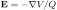
، حيث إن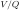
هو الجهد الكهربائي. وبعد أخذ التدرج يجد المرء:| (26) |
ومن اللافت أن مقدار الحقل أعلاه أصغر دائما من مقدار الحقل الموافق في نظرية Maxwell، أي
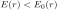
. إضافة إلى ذلك، تنعدم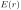
عند المسافات الكبيرة وعند المبدأ على حد سواء (انظر النقاط الساكنة للجهد في الشكل 1). وبوجه خاص، يمتلك الحقل سلوكا شبيها بسلوك Coulomb،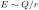
من أجل ، وينعدم خطيا عند المقاييس القصيرة، أي
، وينعدم خطيا عند المقاييس القصيرة، أي 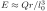
من أجل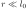
. ولا تؤكد هذه الحقيقة حسن سلوك الحقول عند المسافات القصيرة في حضور آثار ازدواجية T فحسب، بل تقول أيضا إنه عند مسافة متوسطة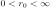
يوجد حد أعظم لمقدار الحقل الكهربائي، أي . ويمكن الحصول على ذلك كما يلي:| (27) |
عند هذه النقطة، نذكر أن حد Schwinger لجسيم ساكن (4) يعني أن مقدار الطاقة المخزنة في حقله الكهروستاتيكي لا يمكن أن يتجاوز كتلته الساكنة. وبالنسبة إلى الإلكترون في ديناميكا Maxwell الكهربائية القياسية، لدينا55 5 نهمل العوامل الضربية غير المهمة لتقدير رتب المقدار.
| (28) |
حيث يفترض أن موتر طاقة-زخم الحقل
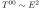
موزع بانتظام داخل الحجم ، مع كون طول موجة Compton للإلكترون وكتلته هما و، و، و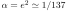
(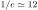
). وتتطابق المعادلة (28) فعليا مع نتيجة Schwinger (4).إذا كرر المرء الحساب أعلاه مع الحقل المعدل بازدواجية T في (26)، فلن يوجد فرق جوهري
للحقول الضعيفة. وبما أن  ، إذا كان حد Schwinger محققا في ديناميكا Maxwell الكهربائية،
فإن ديناميكا ازدواجية T الكهربائية تحققه أيضا. وعلى العكس، إذا انتهكت ديناميكا Maxwell الكهربائية حد Schwinger، أي إنها تتطلب تصحيحات لاخطية، فقد لا يكون هذا هو الحال بالنسبة إلى الفعل (6). ومن المفيد لذلك
تقدير قيمة
، إذا كان حد Schwinger محققا في ديناميكا Maxwell الكهربائية،
فإن ديناميكا ازدواجية T الكهربائية تحققه أيضا. وعلى العكس، إذا انتهكت ديناميكا Maxwell الكهربائية حد Schwinger، أي إنها تتطلب تصحيحات لاخطية، فقد لا يكون هذا هو الحال بالنسبة إلى الفعل (6). ومن المفيد لذلك
تقدير قيمة  التي تبدأ عندها الآثار اللاخطية66
6
توجد مقترحات بديلة لقيمة
شدة الحقل التي تصبح عندها اللاخطية مهمة [47]. وبناء على ذلك قد تختلف الحدود على
التي تبدأ عندها الآثار اللاخطية66
6
توجد مقترحات بديلة لقيمة
شدة الحقل التي تصبح عندها اللاخطية مهمة [47]. وبناء على ذلك قد تختلف الحدود على  .. ولهذا
الغرض، يمكن النظر في كثافة الطاقة في حجم
.. ولهذا
الغرض، يمكن النظر في كثافة الطاقة في حجم
 . ومن (28) يحصل المرء على أن
. ومن (28) يحصل المرء على أن
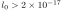
m.إن وجود مثل هذا الحد يقول أساسا إن المقياس الذي يتطلب عنده الفعل (6) تصحيحات لاخطية يقع حول 10 GeV. وقد يبدو هذا مفاجئا لأن ازدواجية T تلطف الحقول الكهروستاتيكية. وإذا أخذ المرء في الاعتبار المتطلب العام ، فإنه ينتج أن أي رصد مستقبلي لازدواجية T عند مقاييس أدنى من (10 TeV)m يجب أن يكون مصحوبا بآثار لاخطية. وبعبارة أخرى، لا يوجد نظام طاقة تظهر فيه ديناميكا ازدواجية T الكهربائية كنظرية خطية. وتؤكد هذه الخلاصة نتائج مبكرة حول التداخل بين ازدواجية T وأفعال نظريات الحقل اللاخطية [48].
4 حساب ثابت المقياس
لقد حصلنا على النتائج حتى هذه النقطة بالعمل ضمن مقياس محدد يعرف باسم مقياس Feynman. والديناميكا الكهربائية ثابتة المقياس. لذلك لا توجد مشكلة في اتباع طريقة مماثلة إذا كانت النظرية هي نظرية Maxwell. أما عموما، فيجب التأكد من أنه، بالنسبة إلى لاغرانجية كتلك في (6)، مع ، فإن الجهود الناتجة (18) لا تعتمد على قيمة محددة لمعلمة المقياس. ومن أجل الاتساق، من الضروري إعادة الحساب بصياغة متغيرات ثابتة المقياس، لكنها معتمدة على المسار، اقترحها أحدنا في سلسلة من الأوراق [49, 50, 51].
ولهذا الغرض، سنفحص أولا الإطار الهاملتوني لهذه النظرية.
في البداية، ينبغي ملاحظة أن النظرية الموصوفة بالمعادلة (6) تحتوي على حدود مشتقات زمنية عليا.
غير أن الهدف في حالتنا الخاصة هو دراسة الجهود الساكنة، ولا تنشأ أي مسألة خاصة. وللراحة الاصطلاحية، سنبقي الترميز المعتاد للمؤثر التفاضلي  ، حتى وإن كان بالإمكان عمليا استبداله بـ .
، حتى وإن كان بالإمكان عمليا استبداله بـ .
العزوم القانونية هي . ومن السهل رؤية أن  ينعدم؛ ومن ثم لدينا معادلة القيد المعتادة، التي تكتب وفقا لنظرية Dirac كمعادلة ضعيفة ، أي . ويجب أيضا كتابة العزوم غير الصفرية المتبقية كمعادلات ضعيفة، أي
. والآن يحصل على الهاملتوني القانوني بالطريقة المعتادة عبر تحويل Legendre. فيقرأ إذن
ينعدم؛ ومن ثم لدينا معادلة القيد المعتادة، التي تكتب وفقا لنظرية Dirac كمعادلة ضعيفة ، أي . ويجب أيضا كتابة العزوم غير الصفرية المتبقية كمعادلات ضعيفة، أي
. والآن يحصل على الهاملتوني القانوني بالطريقة المعتادة عبر تحويل Legendre. فيقرأ إذن
| (29) |
ويجب أيضا كتابته كمعادلة ضعيفة. بعد ذلك، يجب أن يتحقق القيد الأولي، ، في جميع الأزمنة. ومن النتائج المباشرة لذلك أننا، باستعمال معادلة الحركة ، نحصل على القيد الثانوي . ومن السهل التحقق من عدم وجود قيود أخرى في النظرية، وأن القيود أعلاه من الصنف الأول.
وبالمضي بالطريقة نفسها كما في [49, 50, 51]، نحصل على الهاملتوني الكلي الموافق، من الصنف الأول، الذي يولد التطور الزمني للمتغيرات الديناميكية بإضافة جميع قيود الصنف الأول. ومن ثم نكتب ، حيث إن و مضاعفا Lagrange اعتباطيان.
والآن نذكر أنه عند استعمال هذا الهاملتوني الجديد، يمكن كتابة معادلة حركة متغير ديناميكي كمعادلة قوية. وبمعونة (29)، نجد أن ، وهي دالة اعتباطية. وبما أن  دائما، فلا يكون لأي من ولا أهمية في وصف هذا النظام، ويمكن إسقاطهما من النظرية. وفي الواقع، فإن الحد المحتوي على
دائما، فلا يكون لأي من ولا أهمية في وصف هذا النظام، ويمكن إسقاطهما من النظرية. وفي الواقع، فإن الحد المحتوي على  زائد، لأنه يمكن امتصاصه بإعادة تعريف الدالة . ونتيجة لذلك، يقرأ الهاملتوني الآن
زائد، لأنه يمكن امتصاصه بإعادة تعريف الدالة . ونتيجة لذلك، يقرأ الهاملتوني الآن
| (30) |
والآن فإن وجود هذه الدالة الاعتباطية الجديدة، ، غير مرغوب فيه إذ لا سبيل لدينا إلى إسناد معنى لها في نظرية كمومية. ومن ثم، ووفقا للإجراء المعتاد، نفرض شرط مقياس بحيث تصبح مجموعة القيود الكاملة من الصنف الثاني. ويعطى اختيار جذاب ومفيد بصورة خاصة بـ
 |
(31) |
حيث إن  هو المعلم الذي يصف المسار المستقيم الشبيه بالفضاء ، و نقطة ثابتة (نقطة مرجعية) على شريحة زمنية ثابتة.
ولا توجد خسارة جوهرية في العمومية إذا
قصرنا اعتباراتنا على . ونتيجة لذلك، يعطى قوس Dirac غير البديهي الوحيد بـ
هو المعلم الذي يصف المسار المستقيم الشبيه بالفضاء ، و نقطة ثابتة (نقطة مرجعية) على شريحة زمنية ثابتة.
ولا توجد خسارة جوهرية في العمومية إذا
قصرنا اعتباراتنا على . ونتيجة لذلك، يعطى قوس Dirac غير البديهي الوحيد بـ
| (32) | |||||
لحساب طاقة التآثر، سنحسب
قيمة توقع مؤثر الطاقة في الحالة الفيزيائية  .
ولنذكر هنا أيضا أنه، كما أثبت Dirac أولا [52]، فإن الحالات الفيزيائية
.
ولنذكر هنا أيضا أنه، كما أثبت Dirac أولا [52]، فإن الحالات الفيزيائية  توافق الحالات الثابتة المقياس. لذلك تأخذ الحالات الفيزيائية الموافقة الشكل
توافق الحالات الثابتة المقياس. لذلك تأخذ الحالات الفيزيائية الموافقة الشكل
| (33) | |||||
حيث إن هي حالة الخلاء الفيزيائية، والتكامل الخطي الظاهر في العبارة أعلاه يقع على مسار شبيه بالفضاء يبدأ عند وينتهي عند ، على شريحة زمنية ثابتة، و هي الشحنة الخارجية. وفي هذه الحالة، تمثل كل حالة من الحالات زوجا من فرميون وضديد فرميون تحيط به سحابة من حقول المقياس للحفاظ على ثبات المقياس.
هي الشحنة الخارجية. وفي هذه الحالة، تمثل كل حالة من الحالات زوجا من فرميون وضديد فرميون تحيط به سحابة من حقول المقياس للحفاظ على ثبات المقياس.
علاوة على ذلك، وباستخدام الصياغة الهاملتونية المطورة في [53]، لدينا
| (34) |
و
| (35) |
بعد ذلك سننظر في الحالة ، أي
| (36) | |||||
وبواسطة (34) و(35)، يمكننا إعادة كتابة (36) بالطريقة الآتية
| (37) | |||||
في الحالة قيد النظر تقرأ قيمة التوقع، ، كما يلي
 |
(38) |
والآن، باستعمال المعادلة (37)، نجد أن قيمة التوقع يمكن أن توضع في الصيغة
| (39) |
حيث . أما حد فيعطى بـ
| (40) | |||||
ويمكن التعبير عنه أيضا حصرا بدلالة دالة Green الجديدة، ، أي،
| (41) |
وباستخدام المعادلة السابقة
وبتذكر أن التكاملات
على و تساوي صفرا إلا على محيط
التكامل، نحصل أخيرا على الجهد لشحنتين متعاكستين، تقعان عند
 و،
و،
| (42) |
بعد طرح حد ثابت  و
و
وهناك طريقة بديلة لصوغ النتيجة السابقة تتمثل في النظر في العبارة (انظر [49]):
 |
(43) |
حيث يعطى الجهد السلمي الفيزيائي بـ
 |
(44) |
مع . وتنتج هذه المعادلة من عبارة الحقل المتجهي الثابت المقياس [53]
 |
(45) |
حيث يكون التكامل الخطي على مسار شبيه بالفضاء من النقطة  إلى ، على شريحة زمنية ثابتة. وتجدر الإشارة إلى أن المتغيرات الثابتة المقياس (45) تتبادل مع القيد الأول الوحيد، أي قانون Gauss، مبينة بهذه الطريقة أن هذه الحقول متغيرات فيزيائية [52].
ونذكر أيضا أن قانون Gauss في حالة Maxwell يقرأ ، حيث أدرجنا المصدر
الخارجي، ، لتمثيل وجود «مصادر ملطخة».
وينبغي كذلك التذكير بأن المتغيرات الثابتة المقياس (45) تتبادل مع القيد الأول الوحيد
(قانون Gauss)، مما يعزز أن هذه الحقول متغيرات فيزيائية.
إلى ، على شريحة زمنية ثابتة. وتجدر الإشارة إلى أن المتغيرات الثابتة المقياس (45) تتبادل مع القيد الأول الوحيد، أي قانون Gauss، مبينة بهذه الطريقة أن هذه الحقول متغيرات فيزيائية [52].
ونذكر أيضا أن قانون Gauss في حالة Maxwell يقرأ ، حيث أدرجنا المصدر
الخارجي، ، لتمثيل وجود «مصادر ملطخة».
وينبغي كذلك التذكير بأن المتغيرات الثابتة المقياس (45) تتبادل مع القيد الأول الوحيد
(قانون Gauss)، مما يعزز أن هذه الحقول متغيرات فيزيائية.
وأخيرا، بتعويض هذه النتيجة في (44) وباستخدام (43)، نجد مباشرة أن طاقة التآثر لزوج من «الشحنات الملطخة» المتعاكسة  ، الواقعة عند و، تعطى بـ
، الواقعة عند و، تعطى بـ
| (48) |
بعد طرح حد ثابت و.
ومن المناقشة أعلاه أصبح واضحا أن فهم ثبات المقياس يتطلب تعيينا صحيحا لدرجات الحرية الفيزيائية في النظام. وبناء على ذلك، لا يمكن حساب الجهد بصورة مشروعة بواسطة قانون Gauss إلا بعد إنجاز هذا التعيين.
5 ملاحظات ختامية
درسنا في هذه الورقة تبعات مؤثر Padmanabhan في الديناميكا الكهربائية. ويمتلك هذا المؤثر خاصية التقاط سمة من سمات نظرية الأوتار تعرف باسم ازدواجية T. ويعادل ذلك القول إن أي تكامل مسار يجب أن يبقى ثابتا بالنسبة إلى تبادل المسارات التي تكون أكبر، وعلى التوالي أصغر، من طول أساسي . وعلى امتداد هذا المنطق، حسبنا الجهود الساكنة الناتجة عن تبادل الفوتونات الافتراضية، وذلك بإدخال فعل حقل مقياس غير محلي لمؤثر Padmanabhan.
وكنتيجة رئيسة، وجدنا أن ازدواجية T تعمل بالفعل بكفاءة عند المقاييس القصيرة. فالجهود منتهية والحقول تنعدم عند المسافات القصيرة. وناقشنا أيضا منصات اختبار ممكنة للنظرية المقترحة في الفيزياء الذرية وتجارب فيزياء الطاقة المنخفضة مثل مكثف Casimir. وخلافا لنظريات حقل غير محلية أخرى، مثل اللّاجسيمات، فإن الحصول على قيود تنافسية من تجارب تعمل عند طاقات دون أقل واقعية. ويعود ذلك إلى أن النظرية المقترحة تمتلك حدا تحليليا إلى ديناميكا Maxwell الكهربائية عند . وقد بينا أيضا أنه عند الطاقات الأعلى تظهر آثار ازدواجية T دائما مقترنة بآثار الديناميكا الكهربائية اللاخطية. وبالاتفاق مع اللّاجسيمات، تدخل ازدواجية T بعدا زمكانيا مستمرا تترتب عليه آثار تكسير للجهود الساكنة. ويبدو أن هذا الجانب مرتبط ببعض جوانب فينومينولوجيا الفلزات الغريبة، وبوجه أعم بما يسمى الكهرومغناطيسية الكسرية [54].
قدمنا أيضا فحصا مزدوجا لاتساق مقاربتنا فيما يتعلق بخواص المقياس في النظرية. وبوجه خاص اقترحنا اشتقاقا بديلا للجهود الساكنة قائما على صياغة متغيرات ثابتة المقياس ومعتمدة على المسار.
تتيح الموضوعات المعروضة في هذا العمل إحدى الفرص النادرة لإقامة صلة بين نظرية حقل معدلة بالجاذبية الكمومية ورصد ملموس لآثار جديدة. ولهذا السبب، نعتقد أن مزيدا من الدراسات ينبغي أن ينجز في هذا الاتجاه.
الشكر والتقدير
حظي أحدنا (P. G.) بدعم جزئي من منحة Fondecyt (Chile) رقم 1180178 ومن ANID PIA / APOYO AFB180002. كما حظي عمل P.N. بدعم جزئي من GNFM، وهي المجموعة الوطنية الإيطالية للفيزياء الرياضية.
References
- Nicolai [2014] H. Nicolai, “Quantum Gravity: the view from particle physics,” in General Relativity, Cosmology and Astrophysics: Perspectives 100 years after Einstein’s stay in Prague, Fundam. Theor. Phys., Vol. 177, edited by J. Bičák and T. Ledvinka (Springer International Publishing, Switzerland, 2014) pp. 369–387, arXiv:1301.5481 [gr-qc].
- Amati et al. [1987] D. Amati, M. Ciafaloni, and G. Veneziano, Phys. Lett. B 197, 81 (1987).
- Amati et al. [1989] D. Amati, M. Ciafaloni, and G. Veneziano, Phys. Lett. B 216, 41 (1989).
- Green and Schwarz [1984] M. B. Green and J. H. Schwarz, Phys. Lett. B 149, 117 (1984).
- Vafa [2005] C. Vafa, “The String landscape and the swampland,” (2005), arXiv:hep-th/0509212.
- Nicolini et al. [2006] P. Nicolini, A. Smailagic, and E. Spallucci, Phys. Lett. B632, 547 (2006), arXiv:gr-qc/0510112 [gr-qc].
- Nicolini [2009] P. Nicolini, Int. J. Mod. Phys. A24, 1229 (2009), arXiv:0807.1939 [hep-th].
- Isi et al. [2013] M. Isi, J. Mureika, and P. Nicolini, JHEP 11, 139 (2013), arXiv:1310.8153 [hep-th].
- Carr et al. [2015] B. J. Carr, J. Mureika, and P. Nicolini, JHEP 07, 052 (2015), arXiv:1504.07637 [gr-qc].
- Knipfer et al. [2019] M. Knipfer, S. Köppel, J. Mureika, and P. Nicolini, JCAP 08, 008 (2019), arXiv:1905.03233 [gr-qc].
- Carr et al. [2020] B. Carr, H. Mentzer, J. Mureika, and P. Nicolini, Eur. Phys. J. C 80, 1166 (2020), arXiv:2006.04892 [gr-qc].
- Bonanno and Reuter [2000] A. Bonanno and M. Reuter, Phys. Rev. D 62, 043008 (2000), arXiv:hep-th/0002196.
- Modesto [2004] L. Modesto, Phys. Rev. D70, 124009 (2004), arXiv:gr-qc/0407097 [gr-qc].
- Dvali and Gomez [2013] G. Dvali and C. Gomez, Fortsch. Phys. 61, 742 (2013), arXiv:1112.3359 [hep-th].
- Nicolini and Spallucci [2014] P. Nicolini and E. Spallucci, Adv. High Energy Phys. 2014, 805684 (2014), arXiv:1210.0015 [hep-th].
- Nicolini [2018] P. Nicolini, Phys. Lett. B778, 88 (2018), arXiv:1712.05062 [gr-qc].
- Modesto et al. [2011] L. Modesto, J. W. Moffat, and P. Nicolini, Phys. Lett. B695, 397 (2011), arXiv:1010.0680 [gr-qc].
- Calcagni et al. [2014] G. Calcagni, L. Modesto, and P. Nicolini, Eur. Phys. J. C 74, 2999 (2014), arXiv:1306.5332 [gr-qc].
- Nicolini et al. [2019] P. Nicolini, E. Spallucci, and M. F. Wondrak, Phys. Lett. B 797, 134888 (2019), arXiv:1902.11242 [gr-qc].
- Giveon et al. [1994] A. Giveon, M. Porrati, and E. Rabinovici, Phys. Rept. 244, 77 (1994), arXiv:hep-th/9401139.
- Maggiore [1993] M. Maggiore, Phys. Lett. B 304, 65 (1993), arXiv:hep-th/9301067.
- Garay [1995] L. J. Garay, Int. J. Mod. Phys. A 10, 145 (1995), arXiv:gr-qc/9403008.
- Kempf et al. [1995] A. Kempf, G. Mangano, and R. B. Mann, Phys. Rev. D 52, 1108 (1995), arXiv:hep-th/9412167.
- Seiberg and Witten [1999] N. Seiberg and E. Witten, JHEP 09, 032 (1999), arXiv:hep-th/9908142.
- Lust [2010] D. Lust, JHEP 12, 084 (2010), arXiv:1010.1361 [hep-th].
- Padmanabhan [1997] T. Padmanabhan, Phys. Rev. Lett. 78, 1854 (1997), arXiv:hep-th/9608182.
- Padmanabhan [1998] T. Padmanabhan, Phys. Rev. D 57, 6206 (1998).
- Smailagic et al. [2003] A. Smailagic, E. Spallucci, and T. Padmanabhan, “String theory T duality and the zero point length of space-time,” (2003), arXiv:hep-th/0308122.
- Spallucci and Fontanini [2005] E. Spallucci and M. Fontanini, “Zero-point length, extra-dimensions and string T-duality,” in New Developments in String Theory Research, edited by S. A. Grece (Nova Publishers, 2005).
- Fontanini et al. [2006] M. Fontanini, E. Spallucci, and T. Padmanabhan, Phys. Lett. B 633, 627 (2006), arXiv:hep-th/0509090.
- Easson et al. [2020] D. A. Easson, C. Keeler, and T. Manton, Phys. Rev. D 102, 086015 (2020), arXiv:2007.16186 [gr-qc].
- Adler [1971] S. L. Adler, Annals Phys. 67, 599 (1971).
- Akhmadaliev et al. [2002] S. Z. Akhmadaliev et al., Phys. Rev. Lett. 89, 061802 (2002), arXiv:hep-ex/0111084.
- Zavattini et al. [2006] E. Zavattini et al. (PVLAS), Phys. Rev. Lett. 96, 110406 (2006), [Erratum: Phys.Rev.Lett. 99, 129901 (2007)], arXiv:hep-ex/0507107.
- Gradshteyn and Ryzhik [1980] I. S. Gradshteyn and I. M. Ryzhik, Table of Integrals, Series and Products (Academic Press, 1980).
- Spallucci et al. [2006] E. Spallucci, A. Smailagic, and P. Nicolini, Phys. Rev. D 73, 084004 (2006), arXiv:hep-th/0604094.
- Kober and Nicolini [2010] M. Kober and P. Nicolini, Class. Quant. Grav. 27, 245024 (2010), arXiv:1005.3293 [hep-th].
- Wondrak et al. [2016] M. F. Wondrak, P. Nicolini, and M. Bleicher, Phys. Lett. B 759, 589 (2016), arXiv:1603.03319 [hep-ph].
- Cheung et al. [2007] K. Cheung, W.-Y. Keung, and T.-C. Yuan, Phys. Rev. Lett. 99, 051803 (2007), arXiv:0704.2588 [hep-ph].
- Aliev et al. [2017] T. M. Aliev, S. Bilmis, M. Solmaz, and I. Turan, Phys. Rev. D 95, 095005 (2017), arXiv:1701.00498 [hep-ph].
- Wondrak and Bleicher [2019] M. F. Wondrak and M. Bleicher, Symmetry 11, 1478 (2019), arXiv:1910.08203 [gr-qc].
- Tiesinga et al. [2021] E. Tiesinga, P. J. Mohr, D. B. Newell, and B. N. Taylor, Rev. Mod. Phys. 93, 025010 (2021).
- Kramida [2010] A. E. Kramida, Atom. Data Nucl. Data Tabl. 96, 586 (2010), [Erratum: Atom.Data Nucl.Data Tabl. 126, 295–298 (2019)].
- Frassino et al. [2017] A. M. Frassino, P. Nicolini, and O. Panella, Phys. Lett. B 772, 675 (2017), arXiv:1311.7173 [hep-ph].
- Gaete et al. [2010] P. Gaete, J. A. Helayel-Neto, and E. Spallucci, Phys. Lett. B 693, 155 (2010), arXiv:1005.0234 [hep-ph].
- Nicolini and Spallucci [2011] P. Nicolini and E. Spallucci, Phys. Lett. B695, 290 (2011), arXiv:1005.1509 [hep-th].
- Rafelski et al. [1973] J. Rafelski, G. Soff, and W. Greiner, Phys. Rev. A 7, 903 (1973).
- Tseytlin [1996] A. A. Tseytlin, Nucl. Phys. B 469, 51 (1996), arXiv:hep-th/9602064.
- Gaete [1999] P. Gaete, Phys. Rev. D 59, 127702 (1999), arXiv:hep-th/9812245.
- Gaete and Spallucci [2006] P. Gaete and E. Spallucci, J. Phys. A 39, 6021 (2006), arXiv:hep-th/0512178.
- Gaete and Spallucci [2008] P. Gaete and E. Spallucci, Phys. Rev. D 77, 027702 (2008), arXiv:0707.2738 [hep-th].
- Dirac [1955] P. A. M. Dirac, Can. J. Phys. 33, 650 (1955).
- Gaete [1997] P. Gaete, Z. Phys. C 76, 355 (1997).
- La Nave et al. [2019] G. La Nave, K. Limtragool, and P. W. Phillips, Rev. Mod. Phys. 91, 021003 (2019), arXiv:1904.01023 [hep-th].